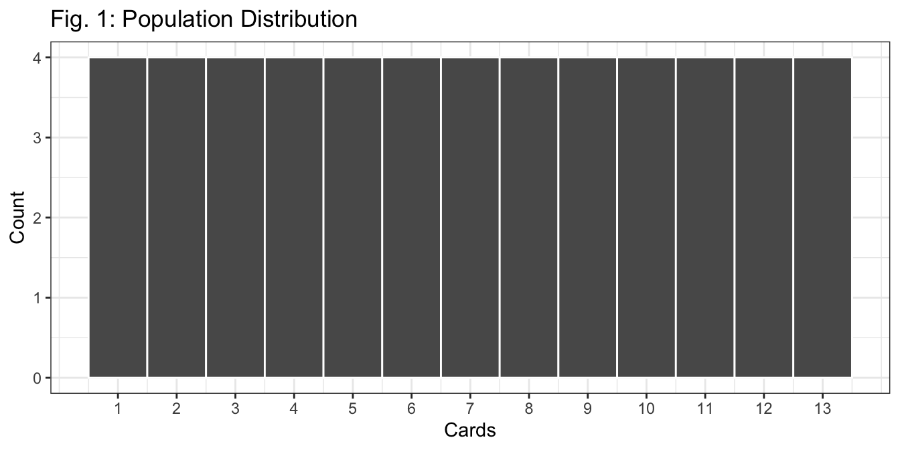
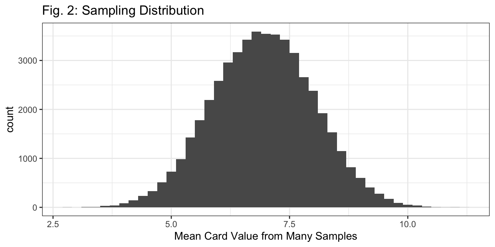
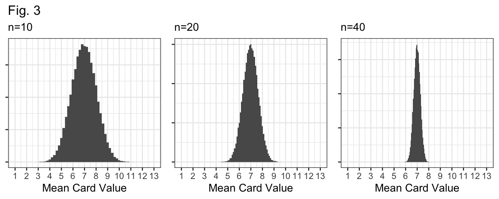
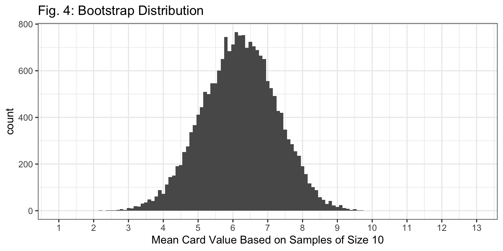

deck <- data.frame(cards = rep(1:13, each=4))Sampling Distributions and Bootstrap Distributions
In this worksheet, we’ll consider the difference between sampling distributions and bootstrap distributions. As a brief reminder:
In all cases, we are interested in estimating an unknown population parameter, \(p\) using a sample statistic, \(\hat p\). In the real world, we calculate \(\hat p\) using data from a sample of size \(n\). We would like to understand how close our estimate, \(\hat p\), might be to the unknown truth, \(p\).
A sampling distribution represents the distribution of all possible statistics (which could have come from every possible sample of size \(n\) from our population). We can’t actually calculate a sampling distribution in the real world, because we only have one sample!
A bootstrap distribution is a practical attempt to understand sampling variability given our single sample. Instead of showing the distribution of statistics from every possible sample from the population, it shows the distribution of statistics from every possible sample of size \(n\) from our sample.
Data: A Deck of Cards
Yet again, we’ll use the example of sampling from a deck of cards. As before, let’s count:
Aces as 1
Jacks as 11
Queens as 12
Kings as 13
Below is code to create the “deck” virtually.

Q1: In Figure 1, why is the height of each bar 4? Describe this distribution.
Sampling Distributions
When creating sampling distributions and bootstrap distributions, we will need a way to sample (from a population or a sample). With cards, it’s possible to physically shuffle the deck and draw a “random sample”. It’s also possible to draw samples with code! Moving forward, we’ll often use the rep_sample_n() function in R to sample. Here’s an example:
set.seed(1) # ensures we all get the same "random" sample
single_sample <- deck %>% rep_sample_n(size = 10, replace = FALSE, reps = 1)
single_sample$cards [1] 1 10 1 9 6 11 4 5 9 6The code above took our deck, and took a simple random sample of size = 10. The additional arguments replace = FALSE means that we’re sampling without replacement, and reps = 1 means we took a single sample from the deck! We then print the cards in our single_sample.
Q2: Based on the code, which cards are in our sample? Use the cards to calculate our sample statistic (the sample mean) based on this sample.
The following code creates a (“snapshot” of the) sampling distribution:
deck %>%
rep_sample_n(size = 10,
replace = FALSE, reps = 50000) %>%
group_by(replicate) %>%
summarize(x_bar = mean(cards)) %>%
ggplot(aes(x = x_bar)) +
geom_histogram(binwidth = 0.2) + theme_bw() +
labs(x = "Mean Card Value from Many Samples",
title = "Fig. 2: Sampling Distribution")
Q3: Based on the code above, how many cards are in each sample? How many different samples did we take to create the sampling distribution in Figure 2?
Q4: Figure 3 (below) displays sampling distributions for samples of size n=10, n=20, and n=40. How are they similar and how are they different? Why do larger samples have sampling distributions with less variability?

Bootstrap Distributions
The following code creates a single “bootstrap sample”.
bootstrap_sample <- single_sample %>% rep_sample_n(size = 10, replace = TRUE,
reps = 1)
bootstrap_sample$cards [1] 11 6 9 1 5 6 1 1 9 9Q5: In the code above, what are we sampling from (the population, or the single sample)? Are we sampling with replacement? What’s our sample size?
Q6: How would your answers to Q5 be different if we were talking about sampling for a sampling distribution?
Next, we write code to calculate a bootstrap distribution:
single_sample %>% ungroup() %>% select(cards) %>%
rep_sample_n(size = 10, replace = TRUE, reps = 20000) %>%
group_by(replicate) %>%
summarize(x_bar = mean(cards)) %>%
ggplot(aes(x = x_bar)) + geom_histogram(binwidth = 0.1) +
labs(x = "Mean Card Value Based on Samples of Size 10",
title = "Fig. 4: Bootstrap Distribution") +
theme_bw() +
scale_x_continuous(breaks = 1:13, limits = c(1, 13))